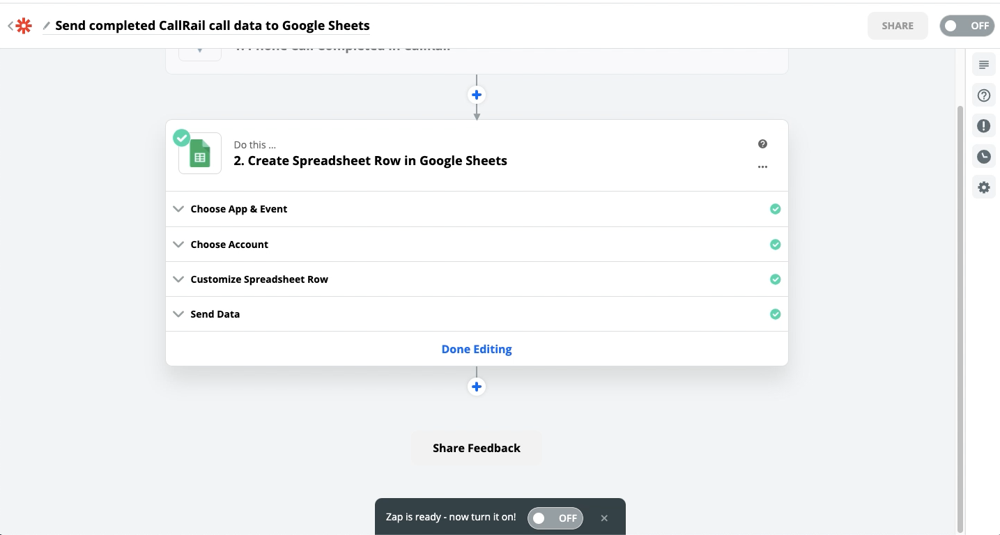
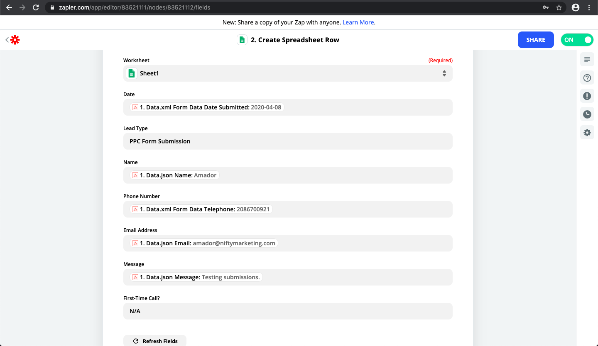

Using Zapier To Set Up an Auto-Generated List of Leads
Some clients want to see a centralized list of all leads generated by their website and online ad campaigns. They don’t want to log into the backend. They don’t want your Analytics numbers (which are poisoned by our test submissions). They want to be able to see and verify that we’re getting them business — leads that convert.
They want to be able to qualify leads so we have feedback on which ones convert and which ones don’t.
In the past, you had to export CSV leads and join them together manually on a weekly or monthly basis.
However, it’s possible have this list generated automatically into a Google Sheet, in real-time. We can label the leads by source. How? Through the Zapier platform.
What You'll Need (Prerequisites)
- A Google account for your client
- A free Zapier account. Create one here: https://zapier.com/sign-up/
- The Gravity Form Zapier-Addon. Download it here:
Where Can Leads Be Pulled From?
- CallRail
- Wordpress + Gravity Forms
- Unbounce (PPC)
What's the Cost?
- CallRail: Free!
- Gravity Form Leads: Free!
- Unbounce Leads (PPC): $24.99/m or $239.88/y (you'll need a premium Zapier plan)
Setting up The Spreadsheet
1. The first thing you'll need to do is set up the Spreadsheet that all of the leads will be pulled into. Log in to your clients Google Account and then visit this link: https://docs.google.com/spreadsheets/d/1P-QMuY5rMso0XuBYRf4ScYUrqdQWo5KmDbXuVfhRPXg/copy?usp=sharing. You will be prompted to make a copy. Once the copy has been made rename it to whatever you like.
Pulling In Gravity Form leads
1. Log in to your client's Wordpress website and go to Plugins > Add New. Then click on Upload Plugin. Click Browse and find the Zapier plugin you downloaded. Finally, click Install Now and then activate it.
2. Go to the Zapier account you created and create a new Zap. Choose Gravity Forms and Sheets. Zapier will provide you with a Webhook URL. Copy it.
3. Go to the form you want to track leads from and click on Settings > Zapier. Click the Add New button and name the zap whatever you like. Paste in the Webhook URL you copied from Zapier and click Save Zapier Feed.
4. Go back to Zapier and click continue. You can test the data if you'd like
5. Zapier will now prompt you to connect to Google Drive. Log in with the client Google account. Then choose the appropriate file and sheet.
6. The next step is to "map the fields." This is where you map each column in the sheet to a field from the form. Simply click the field and a list of options will drop down that you can select from.
Tip
You can type in static text for any field. For example, you can set "Form Submission" to be the "Source" field for all Gravity Forms.
10. Turn the Zap on
Pulling in CallRail Leads
1a. Add the client's Google Account as a user to CallRail.
1b. You'll need to click on the link from the client's Google Account to finalize the user setup
2. Once the Google Account has been added as a user, go to Zapier and create a new zap connecting CallRail and Google Sheets
3. Authorize the client's CallRail credentials
4. Choose the proper company
5. Connect your Google Sheet & map the fields like you did for Gravity Forms.
6. Turn on the zap
Pulling in Unbounce Leads
1. Go to the client'z Zapier account and create a new Zap connecting Webhooks by Zapier with Google Sheets. Copy the Custom Webhook URL.
2. Log into Unbounce: https://app.unbounce.com/users/sign_in (see Nifty PW sheet)
3. Find your client in the left-hand side and click into the landing page you want to monitor leads from. Then click on Integrations. In the sub tab, click Webhooks. Click Add Webhook and paste the URL from Zapier. Click Save
4.Go back to Zapier and connect the Google sheet.
5. Map the fields like you did with CallRail and Gravity Forms
6. Turn on the zap